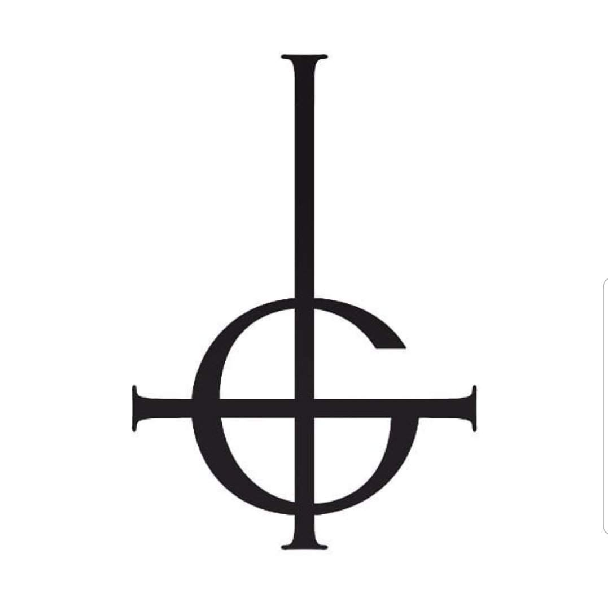
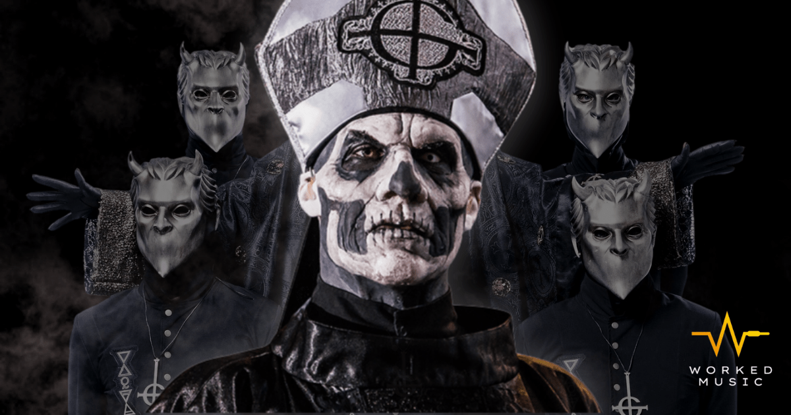

Integrantes
o Papa Emeritus I: voz (2010-2012)
o Papa Emeritus II: voz (2012-2015)
o Papa Emeritus III: voz (2015-2017)
o Cardinal Copia: voz (2018-2020)
o Papa Emeritus IV: voz (2020-presente)
• Nameless Ghouls (Guls sin nombre): todos los instrumentistas:
o (Fuego) Guitarra líder
o (Agua) Bajo
o (Aire) Teclado
o (Tierra) Batería
o (Éter o Quintaesencia) Guitarra rítmica
Los seis miembros de Ghost imitan a la Iglesia católica pero han invertido la imagen para rendir culto a Satanás en lugar de a la Santísima Trinidad. Los Nameless Ghouls representan cada uno de los cinco elementos: fuego, agua, aire, tierra y éter (también conocido como quintaesencia), y llevan su respectivo símbolo alquímico en su traje. Con la nueva indumentaria de Meliora cada Nameless Ghoul tiene los cinco elementos en la parte derecha de sus ropas, y el elemento que representa ese Ghoul está destacado para mostrar la identidad del miembro. En 2018, la banda se amplió para incluir a un tercer guitarrista, dos tecladistas a las que se hace referencia como las "Ghoulettes" y Papa Nihil en el saxofón.
